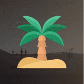 Sahara DAO Sahara DAO 是一种合成协议，旨在为 Cronos 网络提供新的创新合成市场。该协议的目标是为最受欢迎的 Cronos 代币以及尚未在链上交易的资产提供和维护合成市场。 Sahara DAO 引入了
SakeSwap 受 Uniswap 和 Sushiswap 的启发，SakeSwap 旨在从价格曲线和贡献者奖励方面改进 AMM 的设计。 当 SAKE 治理上线时，SAKE 持有者可以提议对 SakeSwap 协议进行更改。 更改可能
SalmonDefi 介绍 SalmonDefi 刚刚登陆 BSC AVAX MATIC FTM KCC 网络。 SalmonDefi 由一支敬业的专业团队（1 名领导者 + 3 名开发人员 + 2 名支持人员）构建。我们将致力于生态系统的成长和成功。 特征 SalmonDefi
SalsaDAO SalsaDAO 生态系统是由 Genius Contracts 构建的多个去中心化应用程序的集合。 SalsaDAO 跨越多个类别：NFT、DeFi、赌博、游戏、DEX 等。 SalsaDAO 的使命是为 Tezos 区块链上的用户创造
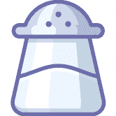 SaltSwap SaltSwap - 巨大的 APY SaltSwap 池允许您通过将代币添加到流动性池或“LP”来提供流动性。 当您将代币添加到流动性池 (LP) 时，您将收到 FLIP 代币（流动性提供者代币的 SaltSwap 版本
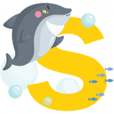 Salvador Finance 什么是萨尔瓦多金融？ 为什么选择萨尔瓦多金融？？？ SALVA 每天赚取高达 300% 的 BNB/BUSD Stake WBNB 每天可赚取高达 300% 的 WBNB 质押 BUSD 每日赚取高达 300% 的 BUSD Stake USDT 每天赚取 USDT 高达 300% Stake CAKE
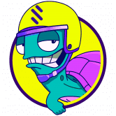 Same Finance Same Finance 是一种杠杆收益农业协议，专注于稳定币收益农业以获得更稳定的收益。 SameFinance 的简单存款和直观的用户体验还旨在让收益农业更容易获得。 SameFinance 提供高达 11 倍的
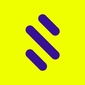 Samecoin Samecoin 生态系统由 Samecoin 实用代币 (SAME) 和 SameUSD 和 SameEUR 等稳定货币组成。 Samecoin 实用代币可以通过筹款购买或作为奖励获得。它们被用作在 SamePay 应用程序上支付交易费用的可行替代方案
SamoDAO 什么是萨摩道？ SamoDAO 是币安智能链上的去中心化储备货币平台。与与美元价值挂钩的 DAI 或 USDC 不同，SamoDAO 的储备金由 SamoDAO 财政部持有。 SamoDAO 是 DeFizer.io 生态系统的一
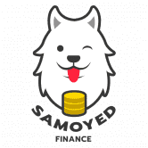 Samoyed Finance SamoyedFinance 是一个 NFT 彩票、游戏和收益农业平台，为您提供无限机会赢取奖品。 您可以在一个平台上赢得永无止境的累积奖金、玩游戏和兑换 NFT。 SAMOYED FINANCE
Samurai DeFi Samurai DeFi 是 BSC 上一个非常创新的项目（不要错过我们的功能！） 🗻 安全： ✅ 时间锁定（6 小时） ✅ 移除迁移代码 🗻 特点： ⚠️自动刻录⚠️ 所有交易的 2% 将被自动销
Sandman Farm 最大的混合产量农业和保险库，多层和最大供应。 有史以来第一次隐形预售，不到 30 秒就售罄。 在通往 AMM、赌博、NFT 和首要 DAO 的道路上。 如果您正在 Polygon
Sandwich Network Sandwich Network 是启动加密货币项目的明确枢纽。 对任何人都友好且无需许可的访问。 Sandwich 是真正去中心化和非托管的，因此任何与 Web3 钱包连接的用户都可以铸造、启动、锁
Sapphire DeFi Sapphire DeFi，Fantom Network 上全新的多链 DeFi Yield Farming，帮助投资者保护他们的资金，因为我们提供透明的环境，让用户可以无忧使用我们的服务，并
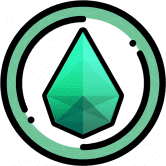 Sapphire Recycle Sapphire DeFi，Fantom Network 上全新的多链 DeFi Yield Farming，帮助投资者保护他们的资金，因为我们提供透明的环境，让用户可以无忧使用我们的服务，并
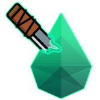 Sapphire War Sapphire War DeFi，Fantom Network 上全新的多链 DeFi Yield Farming，我们提供透明的环境，帮助投资者保护他们的资金，让用户可以无忧使用我们的服务，并有
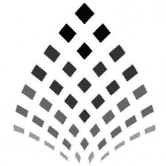 SARCSWAP 什么是 SARCSWAP ？ SARCSWAP / SnakeArt Cash SnakeArt Cash 是 SnakeArt 生态系统的货币。 SnakeArt Cash 是一个完全由社区驱动的 DeFi 代币，为您持有的加密资产提供可观的利息。 使用 SnakeArt Cash，您可以通过在单
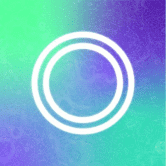 Saros Finance Saros Finance 是基于 Solana 的统一 DeFi 产品套件，具有三个基本构建块：SarosSwap (AMM)、SarosFarm 和 SarosStake，其中 SarosSwap 是整个生态系
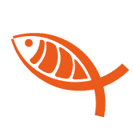 SashimiSwap SashimiSwap (sashimi.cool) 是一个受 Uniswap 启发的投资平台，致力于“倍增”流动性提供者的被动收入。与大多数其他平台主要依赖交易费用不同，SashimiSwap 除了交易费用
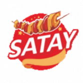 Satay Swap Finance 🍢 Satay Swap Finance - Binance Smart Chain （BSC）上的下一次进化 DeFi 交换 通过收益耕作赚取 SATAY 或在彩票中赢取它，然后将其投入池中以赚取更多代币！ 在您可以信任的平台上提供初
SatisFinance SatisFinance 是 GooseDefi 和 Fullsail Finance 的分叉项目，凭借其独特的回购和 Hybird 销毁机制，使其成为 BSC 上的第 4 代通缩收益农业项目。 欢迎来到 SatisFinance——币安智能链上
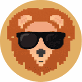 Savanna Finance Cronos 链上排名第一的算法稳定币平台。 建立在 MM Finance 之上的高产和安全的农业环境。 SVN 代币通过铸币税与 1 MMF 的价格挂钩。 欢迎来到萨凡纳金融 Cronos 上的第一个算法稳
ShopSwap Finance ShopSwap 是一个运行在 BSC（Binance 智能链）上的单产农业生态系统。我们的协议建立在从 PancakeSwap 分叉的 DEX（去中心化交易所）之上，它允许用户在 ShopSwap Checkout 支
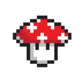 Shroom.Finance Shroom 是一个 DeFi 协议和 DAO，专注于游戏内资产的铸造、发布和交易。该协议 100% 由其社区驱动、拥有和管理，没有中央方或中间人。 我们正在为真正去中心化的生
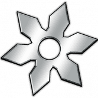 Shuriken.Finance Shuriken.Finance 是一个农场，它将释放几个可种植的代币，每个代币的供应量都较低。我们也在实施可以使用手里剑代币的游戏！你准备好成为一名 Defin 忍者了吗？开始种植手
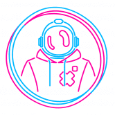 ShuttleOne 全球首个专注于企业金融服务的稳定币借贷网络。 ShuttleOne.Network 流动资金池作为一个基金，为 ShuttleOne 目前提供给现实世界业务（例如贷款和汇款）的服务提供资金。 流动性提供
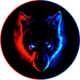 SiberianSwap SiberianSwap 排名第一的混合 DEX 和收益平台，在 BSC 上自动获取流动性。 • 自动获取流动性 • DEX（去中心化交易所） • 6% 税（自动回购和销毁） • 推荐计划 • Anti Whale 功能以
SIL FINANCE SIL.Finance 是一个单面收益聚合器（一键对冲），带有冒险功能的 NFT 农卡插件。SIL 的模型在 DeFi 市场上是独一无二的，它的单面功能完全由用户贡献，产品提供了所有
SILO SILO 是一个用于 RAKE 和 bR34P 的非通胀单一资产抵押平台，旨在将 RAKE 和 bR34P 从流通中移除，并通过使用 10% 的存款和取款税从弱手到强手的价值转移来支付 RAKE 和 bR34P 奖励。从这
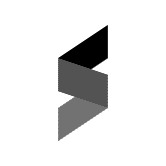 Simple Swap Finance Simple Finance 是在 BSC 上种植代币的最简单方法。我们的目标是让每个人都可以使用 Yield Farm，甚至是新用户。因此，质押您的 LP 代币并以最简单的方式赚钱。我们得到
SimplyCornSwap 我们的任务 关于我们 SimplyCornSwap 是一个跨多个网络的新时代 DEX 平台。出于扩展去中心化金融空间的需要，我们选择了基于信任和具有更大影响力的不断发展的技术创建的
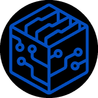 Simulation Swap Simulation Swap 是具有创新通缩措施的第三代收益农场。🎁巨大的赠品🎁 40 名获胜者可获得 2000 美元关注我们的推特 喜欢并转发此帖子 回复此推文并标记其他 3 人 加入我们：
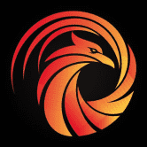 Simurgh Finance 自动燃烧收获锁定反鲸鱼 自动流动性 SIMURGH 的每次转让必须缴纳 5% 的转让税。 4% 的转让税通过合约自动添加到流动性池中，以不断提高价格下限。流动性将被锁定且
Single Finance Single Finance 是第一个以美元计价的 DeFi 收益赚取平台，提供通过最小化价格影响的影响来保护您的资金的策略。 通过我们的策略保护您的本金，我们帮助您保持杠杆收益
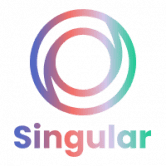 Singular Farm Singular 是一个多链、去中心化、战略收益最大化的农场，运行在 Binance Smart Chain、Fantom、Avalanche、Polygon 上。用户受到我们独特的三
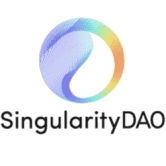 SingularityDAO SingularityDAO 是一个真正的去中心化自治组织，旨在简化对加密经济的访问。 AI-DeFi：尖端的去中心化金融与世界上最先进的去中心化人工智能相结合，创造一种
Sirius Finance Sirius Finance 是 Astar Network 上第一个 Polkadot 原生稳定币 AMM。我们的使命是为稳定币提供一个稳定、高流动性的交易平台，为连接的协议提供深度流动性，吸引并锁定巨大的价值
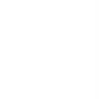 Sky Swap Finance #BSC 比 Uniswap 更便宜更快？探索 Sky Finance，这是币安智能链 (BSC) 上领先的 DEX，拥有 DeFi 中最好的农场和 Sky 彩票。SkySwap.xyz——BSC 网络（币安